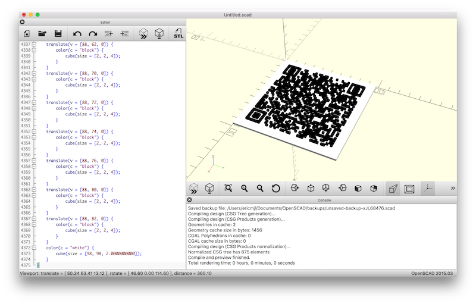

In this blog post, I'll detail how I created a 3D printed QR code that can be used to help guests get on our home guest network in geek style. This part will detail the creation of a QR code with Python. The next part will detail how I created a program to generate 3D printable blocks. The final part will detail how I created a hybrid command line app and Flask app from the same code base, using click and Flask.
Over the weekend, I embarked on a project to create a 3D printed QR code that guests at our house could scan to gain access to our guest wireless network.
From the standpoint of practicality, sure, it's trivial to open up phone settings, find the WiFi network name, and give them the password, but... this has the coolness factor associated with it! Imagine scanning a 3D-printed QR code! Until this becomes commonplace, it's a cool thing to be able to do.
Anyways, there's a ton of QR code generators out there on the web, and there's more than a handful of WiFi QR code generators out there - so why did I embark on this project?
Partly it's borne out of security reasons - I am not giving my WiFi password up to some random website. Who knows whether they're actually storing the passwords?
Another part of this is borne out of me wanting to scratch my itch surrounding QR codes. The last time I went to China (Xi'an and Shanghai, specifically), I saw QR codes everywhere. There surely had to be something good we could use this for at home that didn't involve just packing and storage.
Ok, let's get started! To create QR codes, all you need are the following packages installed in your environment:
pyqrcode [pip]pypng [pip]If you want to do the 3D printing part, you'll need another package:
SolidPython [pip]numpy [conda/pip]Finally, if you'd like to work with command line interfaces and Flask, you'll need:
click [pip/conda]Flask [pip/conda]Let's start by creating a QR code for our WiFi guest network.
Let's say that these are the security credentials for the network:
Family Guest Networkvn8h2sncu093y3nd!WPABecause QR codes are merely two-dimensional barcodes that encode a string that can be parsed by another program, in order to create a QR-code that is readable for accessing WiFi, we need a string that can be parsed. This string is structured as follows:
WIFI:S:<SSID>;T:<WPA|WEP|>;P:<password>;;
So in our case, we would want a string that looks like:
WIFI:S:Family Guest Network;T:WPA;P:vn8h2sncu093y3nd!;;
Now, we can code up our Python program do encode the QR code for us. I'll assume you're running Python 3.6 or later.
import pyqrcode as pq ssid = "Family Guest Network" security = "WPA" password = "vn8h2sncu093y3nd!" qr = pq.create(f'WIFI:S:{ssid};T:{security};P:{password};;') print(qr.terminal())
With that block of code, you should get a QR code printed to your terminal, just like that!
Let's say you wanted to do the simple thing, and just have a regular laser/inkjet printer make a printout of the QR code. To do so, you can save the QR code to disk as a PNG file:
qr.png('home_guest_wifi.png')
And just like that, you've used Python to create a WiFi QR code! How easy was that?
Along the way, I also used Kite in the Atom text editor while embarking on this project - this allowed me to view documentation and common usage patterns for the packages I imported.
Now, if you remember that QR codes are just "ASCII strings encoded in a 2D barcode", then you'll know that you can pass any arbitrary string into the pyqrcode.create() function. That means you can come up with any creative use of a short string that needs to be scanned to be useful! For example, you can create business cards with your LinkedIn profile URL embedded in the QR code, or use it to encode a serial number information on your possessions, or more!
Stay tuned for the coming blog posts!
Did you enjoy this blog post? Let's discuss more!
In this blog post, I'll detail how to create a 3D printable QR code model using Python.
In the previous blog post, I detailed how to use pyqrcode to create a QR code for a WiFi string. The most important parts were:
WIFI:S:<SSID>;T:<WPA|WEP|>;P:<password>;;
import pyqrcode as pq ssid = "Family Guest Network" security = "WPA" password = "vn8h2sncu093y3nd!" qr = pq.create(f'WIFI:S:{ssid};T:{security};P:{password};;')
Now, let's see how we can create 3D models with Python code. We will need a package called SolidPython, and optionally numpy to help us with some array processing. (It can be done entirely using built-in lists if needed.)
To start, I first defined a convenience function that let me create and return a QRCode object that can be passed around and manipulated.
def create_wifi_qr(ssid: str, security: str, password: str): qr = pq.create(f'WIFI:S:{ssid};T:{security};P:{password};;') return qr
Its use will become evident later. You'll also notice I'm using type hints inside the function.
Using the function, we can create a text representation of the QR code:
qr = create_wifi_qr(ssid, security, password) print(qr.text())
This will give essentially a series of 1s and 0s. This is a string, though, not a numpy array. Hence, we may have to convert this into a list of lists, or a numpy array (as a user of the scientific Python stack, I prefer using arrays where possible, but in this case there is no real practical advantage to doing so because we are not doing linear algebra).
Let's now define a function that takes in the QRCode object and return an array version of the text rendering.
def qr2array(qr): arr = [] for line in qr.text().split('\n'): if len(line) != 0: arr.append([int(bit) for bit in line]) return np.vstack(arr)
With that, we can create an array version of our QR code above:
arr = qr2array(qr)
Now, we're ready to play with SolidPython!
SolidPython is a Python package that provides an interface to the OpenSCAD language. The OpenSCAD language allows a programmer to programmatically define 3D models using the language of geometry. This includes the creation of cubes and other 3D objects, as well as object manipulations, such as translation, coloring, and union-ing.
For brevity, I'll not introduce you to more detail on what OpenSCAD is. Rather, I'll recommend two readings, to be read in order:
Take a look at the code below for an example of how we create the 3D object.
from solid import color, cube, scad_render, translate, union SCALE = 2 # output defaults to 1 mm per unit; this lets us increase the size of objects proportionally. cubes = [translate([i*SCALE, j*SCALE, 0])(color('black')(cube(size=[SCALE, SCALE, HEIGHT]))) for i, row in enumerate(arr) for j, col in enumerate(row) if arr[i, j] == 1] base_plate = color('white')(cube(size=(arr.shape[0] * SCALE, arr.shape[1] * SCALE, HEIGHT / 2))) qrobj = union()(*cubes, base_plate) print(scad_render(qrobj))
This will give the following OpenSCAD code, which I've truncated for brevity:
union() {
translate(v = [8, 8, 0]) {
color(c = "black") {
cube(size = [2, 2, 4]);
}
}
translate(v = [8, 10, 0]) {
color(c = "black") {
cube(size = [2, 2, 4]);
}
...
translate(v = [88, 80, 0]) {
color(c = "black") {
cube(size = [2, 2, 4]);
}
}
translate(v = [88, 82, 0]) {
color(c = "black") {
cube(size = [2, 2, 4]);
}
}
color(c = "white") {
cube(size = [98, 98, 2.0000000000]);
}
}
What we've done here is take the 1s and created cubes where they are supposed to be, and leave the zeros empty. Then, we add a "base plate" so that everything stays nice and connected, and finally union all of the cubes with the base plate, so that we get one solid piece that is 3D printed.
If you observe the output of the function scad_render, it will essentially be valid OpenSCAD text. With OpenSCAD text, you can paste it into OpenSCAD to render it:

Following that, it can be exported as an STL file. The export process in OpenSCAD takes some time, but once done, it then has to be first converted into a .gcode file, which gives a 3D printer the necessary instructions to move its printhead around to print the QR code.
In short, the flow is:
SolidPython -> OpenSCAD -> STL -> .gcode
The key things to take away from this blog post are:
Now that you have an example of how to create an OpenSCAD file from Python using SolidPython, I hope you'll go forth and make a ton of fun stuff!
Did you enjoy this blog post? Let's discuss more!